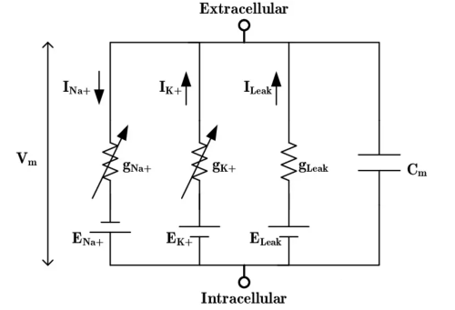
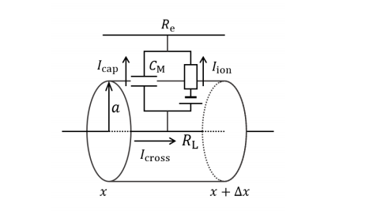

细胞#
Cell 的核心组件包括以下三个组成部分：
HHTypeNeuron：基类，提供 HH 类型神经元的接口。SingleCompartment：单房室神经元模型，适用于结构简单的神经元。MultiCompartment：多房室神经元模型，适用于需要考虑空间结构的神经元。
三者共同构成了从局部膜区域到完整神经元结构的建模体系，通过继承机制共享建模接口，配合 brainstate 的加速与计算能力，为在细胞层面的神经计算建模提供了强大支持。
HHTypedNeuron#
电生理特性#
HHTypedNeuron 是 braincell 中的一个基础抽象类，用于构建 Hodgkin–Huxley 类型的神经元模型。在这种建模方式下，神经元的膜电位由多个电流组成：
主动电流：由钠、钾通道控制，具有电压门控性质。
被动电流：如漏电流。
电容电流：由膜电位变化产生。
这种建模方式最早由 Hodgkin 和 Huxley 于 1952 年提出，用以解释鱿鱼巨轴突的动作电位机制。 HH 模型不仅奠定了现代神经建模的基础，而且至今仍然是许多模型的核心构件。
经典的 HH 模型等效电路图如下：

在经典的 HH 模型中，膜电位 \(V\) 的变化由以下方程描述：
其中：
\(C_m\)：膜电容
\(I_{\text{Na}}, I_{\text{K}}\)：钠、钾通道产生的离子电流
\(I_L\)：漏电流
\(I_{\text{ext}}\)：外部注入电流（例如通过刺激电极注入）
建模实现#
HHTypedNeuron 继承自：
Dynamics：用于定义状态变量与动力学方程。Container：用于管理模块。DiffEqModule：微分方程模块，支持自动建模。
因此，基于 HHTypedNeuron，你可以轻松实现对离子通道的灵活组合，构建多种动力学配置。
同时，因为 HHTypedNeuron 与 brainstate 深度集成，此模块也同样支持自动微分和向量化仿真，便于批量模拟和训练建模。
值得一提的是，在 braincell 中，我们所有的神经元模型都是基于 HH 模型构建的。
具体来说，SingleCompartment和 MultiCompartment这两个神经元模型类，都继承自 HHTypedNeuron，共享其统一的接口和建模框架。这使得我们可以在不同结构复杂度下，复用相同的离子通道机制与动力学建模方式。
SingleCompartment#
电生理特性#
SingleCompartment 表示一个没有空间结构的神经元模型，用于对具有单个房室的的基于电导的神经元进行建模。其膜电位的变化由以下微分方程控制：
其中：
\(C_m\)：膜电容
\(V\)：膜电位
\(g_j\)：第 \(j\) 个离子通道的电导
\(E_j\)：该通道的反转电位
\(I_{\text{ext}}\)：外部注入电流
每个通道的电导 \(g_j\) 由激活门控变量和失活门控变量控制，形式为：
其中：
\(\bar{g}_j\)：最大电导
\(M\)：激活变量
\(N\)：失活变量
\(x, y\)：幂指数，具体由通道类型决定
这些门控变量的动态遵循一阶动力学方程：
也可以等价地写作：
其中：
\(x \in \{M, N\}\)
\(\phi_x\)：温度因子
\(x_\infty\)：稳态值
\(\tau_x\)：时间常数
\(\alpha_x\) 和 \(\beta_x\)：速率常数
建模实现#
SingleCompartment 的建模实现相当简单，只需要继承 HHTypedNeuron 并对其中不同离子通道进行设定即可。
下面我们来看一个例子:
class HH(braincell.SingleCompartment):
def __init__(self, size, solver='rk4'):
super().__init__(size, solver=solver)
self.na = braincell.ion.SodiumFixed(size, E=50. * u.mV)
self.na.add(INa=braincell.channel.INa_HH1952(size))
self.k = braincell.ion.PotassiumFixed(size, E=-77. * u.mV)
self.k.add(IK=braincell.channel.IK_HH1952(size))
self.IL = braincell.channel.IL(
size,
E=-54.387 * u.mV,
g_max=0.03 * (u.mS / u.cm **2)
)
在这个例子中，我们使用 SingleCompartment 构建基于 HH 模型的单神经元，该神经元包含钠通道 INa、钾通道 IK 和漏电流 IL ，这些通道共同决定神经元的电生理特性。
通过例程，不难看出， SingleCompartment 作为 braincell 中常用的细胞建模接口，极大地简化了神经元的构建，大大提升了建模效率。
MultiCompartment#
电生理特性#
在真实神经元中，细胞不仅仅是一个点状结构，而是具有复杂的空间结构：树突、轴突、胞体等，这些结构对神经元的电生理行为有显著影响。
为了更精确地模拟空间上的电信号传播，我们引入了 MultiCompartment 。
实际上，神经元并非只是简单的电容器，而是具有空间结构的电缆型系统。 电缆理论是一种用于描述电信号在神经元轴突或树突等细长结构中如何传播的理论模型。 电缆理论源于工程学中对传输线的建模，在神经科学中，它将树突和轴突看作一维电缆，能够模拟电信号随时间和空间的变化。
计算模型中，电缆理论通常通过离散房室模型来实现。神经元被分割成多个房室，每个房室是一个等效电路单元，相邻房室之间通过电阻连接，形成近似的空间结构模拟。
结合我们的建模框架不难发现，这就是 MultiCompartment 建模的核心原理。
在这种建模方式中，整个神经元被划分为多个空间上连接的房室，每个房室有独立的膜电位、膜电流，并通过电缆理论中的轴向电阻进行耦合。
每个房室拥有自己的离子通道分布和膜电流。
房室之间通过电阻连接，电流可以在房室之间传导。
能够描述电信号在树突或轴突上的衰减、延迟、反射等现象。
电缆理论的示意图如下：

其电学形式遵循电缆方程：
其中：
\(C_m\)：膜电容
\(I_{\text{ion}, i}\)：第 \(i\) 个房室的离子电流
\(\frac{(V_j - V_i)}{R_{ij}}\)：从相邻房室 \(j\) 传导到房室 \(i\) 的轴向电流
\(R_{ij}\)：两个房室之间的轴向电阻
\(I_{\text{ext}, i}\)：外部注入电流
由于具备空间建模能力，多房室模型常用于建模复杂树突整合、动作电位沿轴突传播等电生理现象。
建模实现#
MultiCompartment 的建模也并不复杂，整体思路与 SingleCompartment 的建模类似，只是需要定义的参数不同。
我们来看这个例子：
class HTC(braincell.MultiCompartment):
def __init__(self, size, solver: str = 'staggered'):
morphology = braincell.Morphology.from_swc(...)
super().__init__(size,
morphology=morphology, # the only difference from SingleCompartment
V_initializer=brainstate.init.Constant(-65. * u.mV),
V_th=20. * u.mV,
solver=solver)
self.na = braincell.ion.SodiumFixed(size, E=50. * u.mV)
self.na.add(INa=braincell.channel.INa_Ba2002(size, V_sh=-30 * u.mV))
self.k = braincell.ion.PotassiumFixed(size, E=-90. * u.mV)
self.k.add(IDR=braincell.channel.IKDR_Ba2002(size, V_sh=-30. * u.mV, phi=0.25))
这个例子展示了如何使用 MultiCompartment 构建一个简单的多房室神经元模型，设定相关通道。当然，这只是一个很简单的例子，我们可以对模型进一步拓展，添加其他通道或者注入电流。
在 SingleCompartment 和 MultiCompartment 中，最关键的区别就在于 morphology 的引入。
在神经建模中， morphology 指神经元的空间结构，包括：
胞体
树突
轴突
空间连接关系
总的来说，在 SingleCompartment 中，神经元被看作一个点。而 MultiCompartment 则通过 morphology 参数把神经元建模为多房室的空间结构网络，从而支持更为真实的动力学模拟。
通过 MultiCompartment，我们可以轻松构建结构精细、行为多样的多房室神经元模型。